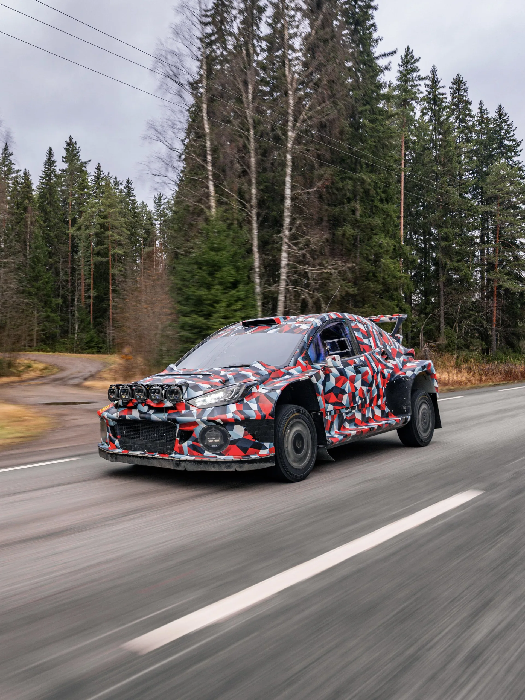
What Will the 2027 WRC Season Look Like?
The 2027 World Rally Championship silly season is shaping up to be one of the most intriguing in recent memory. With the WRC27 ruleset ready to reshape the championship's top class, teams and drivers face a very different landscape ahead of the new season. Toyota are the only one of the teams to announce their 2027 lineup, fielding two teams with two different cars for the upcoming season. M-Sport are preparing their lineup as well, while the arrival of new tuners such as Project Rally One and WRT Rally1 Spain promises to bring new or returning faces to the WRC's top class. Meanwhile, Hyundai and Lancia are still weighing up whether to homologate kits for their Rally2 cars, enabling them to compete in the top class.
But with several seats still up for grabs and multiple projects racing against the clock, just how many cars can we expect to see on the 2027 WRC season, and who will be behind the wheel of each of them?
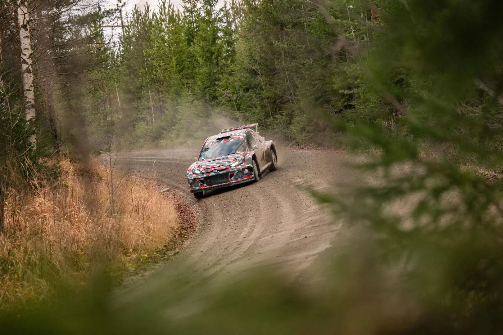
Third GR Yaris Rally1 Candidates
Who gets to drive Toyota's third GR Yaris Rally1 when Kalle Rovanperä is not competing?
Photo - Τoyota Gazoo Racing
Toyota is the only team to announce a lineup for the 2027 season. The Japanese team is set to have an all-star lineup of 6 drivers split into two teams for next season, with Ott Tänak and Kalle Rovanperä returning to the team.
With Rovanperä set to compete in roughly half of the season's rallies, Toyota is set to have an open seat for a good chunk of the rallies the Finn doesn't compete in. But who will get to fill these openings? The Japanese manufacturer's 2027 lineup featured a glaring omission - 9-time World Rally Champion Sébastien Ogier. Despite not yet being announced, it is widely expected that the Frenchman will compete in a limited campaign with the team, as reported by Motorsport earlier this month.
But what about the remaining events? Toyota is expected to field up to six cars across the 2027 season, with additional outings potentially opening the door to some younger drivers. As Jari-Matti Latvala explained, Toyota will offer the third Yaris seat to young drivers in events not competed by Ogier or Rovanperä. Importantly, candidates don't necessarily have to be part of Toyota's Challenge Programme, but they must be affiliated with the manufacturer. This could put the likes of Yuki Yamamoto and potentially Jaspar Vaher in contention for a Rally1 opportunity in 2027. And since all Toyota drivers can be within a shout of an outing, don't rule out long-time WRC2 drivers like Roope Korhonen either.
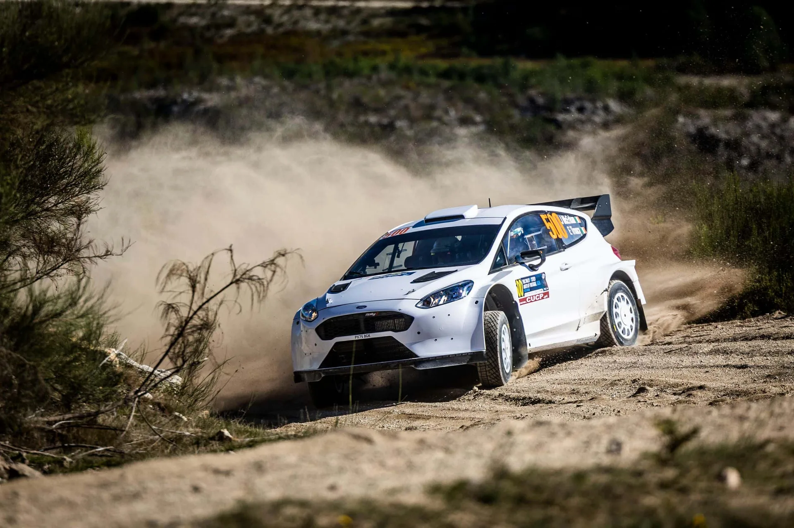
What about M-Sport's lineup?
M-Sport are set to field three Fiesta Rally1s full-time in 2027. But who'll get to drive them?
Photo - WRC Media
M-Sport became the first manufacturer to test a Rally1-Kit for their Fiesta Rally2 in October. Josh McErlean later gave the car its unofficial debut in the 2026 European Rally Championship season finale, with the car not having any of its stage times recorded. As reported by Autosport, the team will field three cars in all rallies in 2027. But who will get the chance to drive them?
It appears both of the Motorsport Ireland-sponsored drivers are in M-Sport's plans for next season, with McErlean having given the car a semi-competitive outing in Fafe and Jon Armstrong having remained active within the team, despite not having tested the new kit, at least in public.
A driver who has tested the updated car is Romet Jürgenson. The young Estonian who competed in twelve out of this year's thirteen rounds, tested the Fiesta on tarmac in Spain, before the ERC finale in Fafe. The young Estonian was an FIA Rally Star programme participant, winning the Junior WRC championship with FIA backing in 2024. Since then, Jürgenson has competed in WRC2, the British Rally Championship as well as ERC with a Ford Fiesta Rally2. His 2026 campaign was a difficult one, with the Estonian finishing a lowly 21st in the WRC2 standings, with just 15 points to his name. Nevertheless, Jürgenson remains a driver with immense potential, and M-Sport's decision to entrust him with an almost full-time programme last season is a clear indication that the team sees him as a top-class driver for the near future.
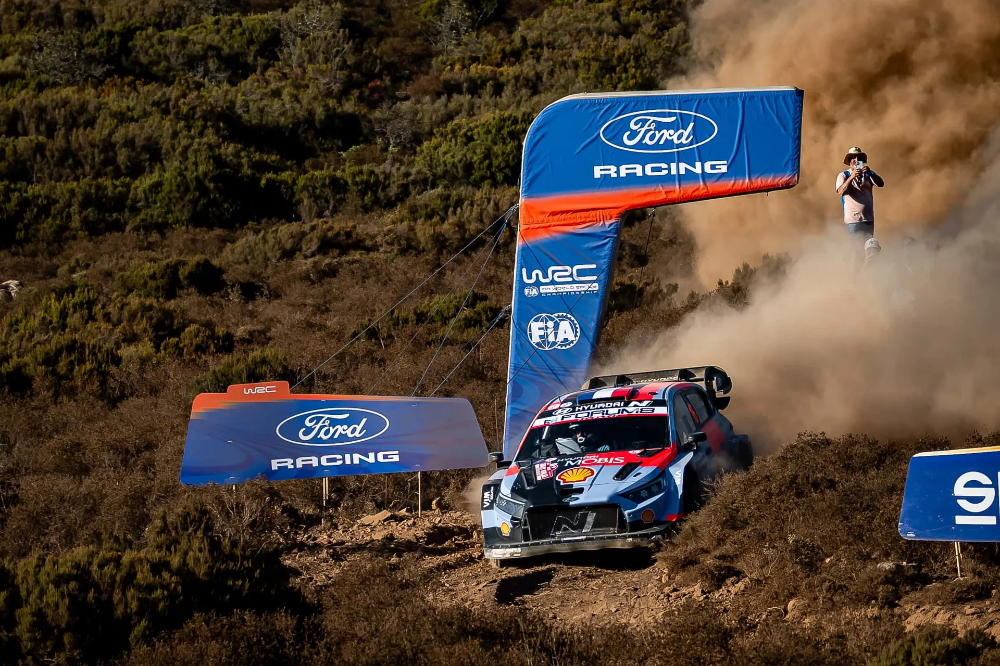
Photo - WRC Media
Can Adrien Fourmaux return to the team? The Frenchman is understood to be a free agent for the 2027 season, but has also tested the new Hyundai i20 N Rally2 in Finland. The Frenchman, who was part of the Cockermouth-based outfit from 2020 to 2024, has previously stated that he doesn't mind taking a year off the top class if it means that he can have a better shot in 2028. That being said, Ford returning as a full-fledged manufacturer in 2028 might entice the Frenchman to rejoin the team.
Fourmaux has previously driven the Fiesta Rally2 in four different seasons, those being 2019, 2020, 2021 and 2023, and is rumoured to have shown interest in testing the team's kit for 2027. With the Rally Monte Carlo entry list closing in a little bit more than a month from now, expect some announcements regarding M-Sport's lineup in December.
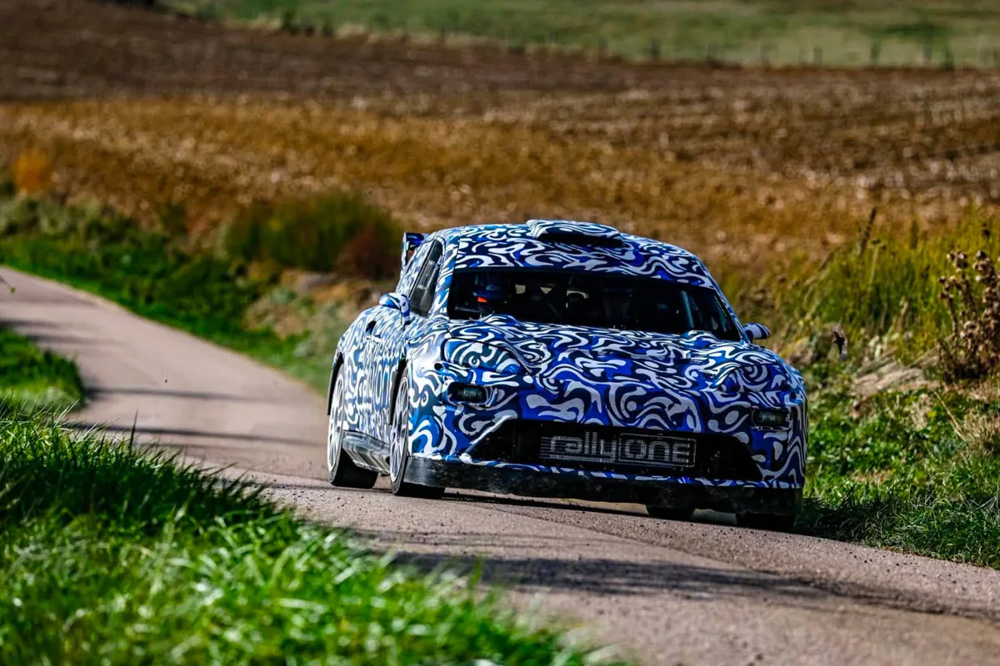
Will Project Rally One debut in Monte?
The WRC's first tuner to commit to the WRC27 ruleset will make their debut in 2027, but when?
Project Rally One recently made headlines with a particularly high-profile addition to its 2027 development driver roster - nine-time World Rally Champion Sébastien Loeb. The Frenchman tested with the team on two occasions in France this fall, assisting them in the development of their 2027 challenger. Despite this, Loeb is not expected to drive for the team, at least in Monte Carlo, as it clashes with the revamped 2027 Dakar Rally.
The Belgian team became the first to commit to the WRC27 regulations in December 2025 and has since accumulated more than 2,000 kilometres of testing on tarmac. The team has also submitted its homologation dossier to the FIA, marking another important milestone in the development of its 2027 challenger. Alongside Loeb, a number of experienced drivers have contributed to the development of the car, including former WRC factory drivers Stéphane Lefebvre, Teemu Suninen, Freddy Loix and Bruno Thiry.
As for when the team will make their competitive debut, there's still uncertainty on that front. Despite reports claiming that the team would feature on the Monte Carlo entry list with two cars, people within the team have previously indicated that making everything happen in time for the season's opener would be a difficult target.
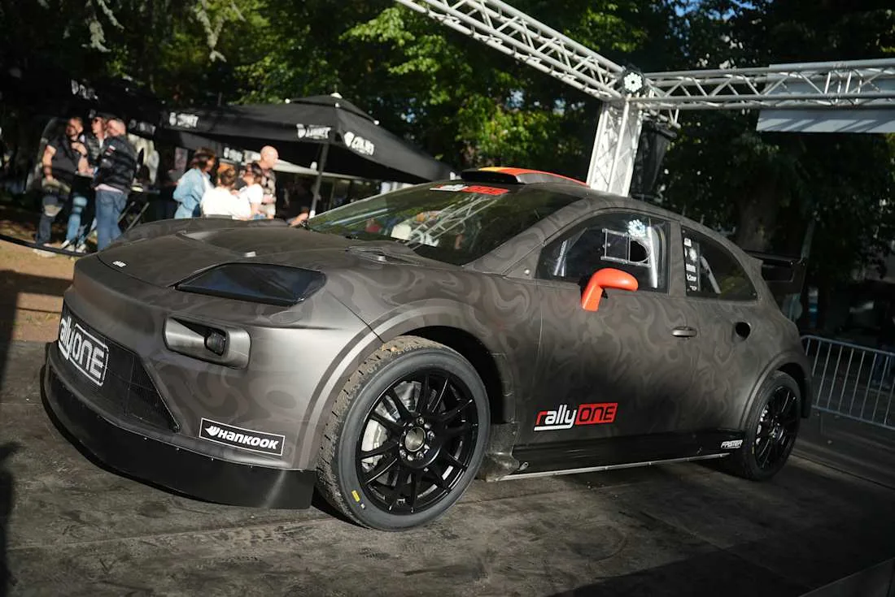
Photo - WRC Media
The team is aiming to compete in most of the tarmac rounds of the 2027 season, which would likely mean Croatia, Canarias and Rome, with Japan being less of a certainty since it's a long-haul event. With the team yet to test its car on gravel, it is unlikely to contest any gravel rounds, at least during the early stages of the season.
As for their lineup, Project Rally One's technical leader, Lionel Hansen, has hinted that the team might opt to rotate their drivers in the selected events they'll compete in 2027, as reported by Dirtfish. Stéphane Lefebvre has been the driver with the most mileage in the car, so he's one of the lead candidates for a drive with the team in 2027. It is understood that the team could opt to rent out their second car to other drivers on an event-to-event basis in the rallies they compete in next season. Like M-Sport, we can expect news on the team's lineup soon, if they are going to enter Monte Carlo.
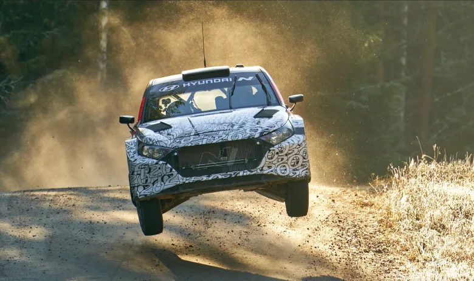
What about Hyundai and Lancia?
Will any of the two manufacturers homologate a kit for 2027?
Photo - Ilkka Lamminsivu
Hyundai's future in the World Rally Championship has been in limbo for quite some time now. The only way the South Korean manufacturer can remain in the sport's top class, at least for 2027 and 2028, is by homologating a kit for their Hyundai i20 N Rally2.
So far, the team has kept their cards close to their chest about homologating a kit for their Rally2. As of right now, Hyundai has been doing development work on a new evolution of the i20 N Rally2 called "Step3", with Hayden Paddon, Kris Meeke, as well as Adrien Fourmaux, having runs with the car in Finland. The cars had been operated by Italian rally team BRC, the outfit with which Hayden Paddon claimed back-to-back ERC titles in 2023 and 2024.
The deadline for any of the Rally2 manufacturers to homologate a kit for their cars is April 1st 2027, so in theory, Hyundai has enough time to complete the development of their new Rally2, and then develop a kit for 2027 and 2028.
Belgian website AutoTrends had previously reported that Hyundai would still be in the WRC for 2027 with two satellite teams, one being BRC and the other one being 2C Competition, operating i20 N Rally2s equipped with the kit, competing in 8-10 rounds. In the same article, it is mentioned that Thierry Neuville and potentially Adrien Fourmaux would also be joined by two young French drivers would be part of their lineup. One of them could be Arthur Pelamourgues, who also competed in the ERC in Fafe and Rome, as well as a partial WRC2 campaign in the i20 N Rally2.
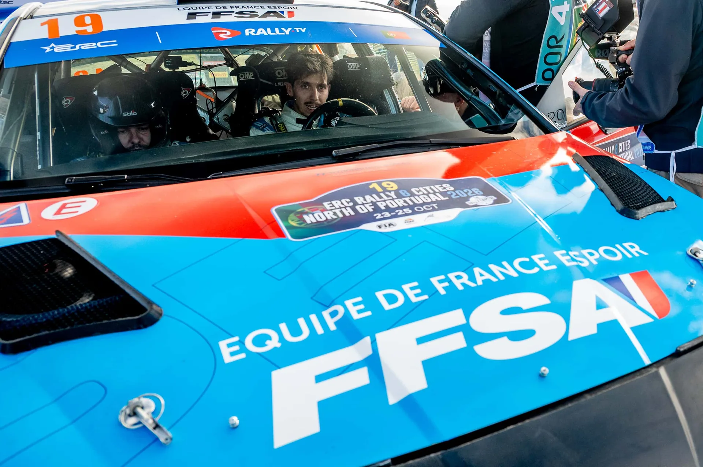
Photo - WRC Media
As for Lancia, the team is still weighing its options when it comes to homologating a kit for their Ypsilon. In a recent interview with Rallye Sport, Yohan Rossel stated that he has high hopes the team would homologate a kit that would enable him to make his top-class debut.
Rumours have also emerged of Lancia testing an aerodynamically enhanced version of the car in the south of France. However, with no official announcement made regarding its 2027 plans, it remains to be seen whether the Italian manufacturer will commit to the WRC27 ruleset.
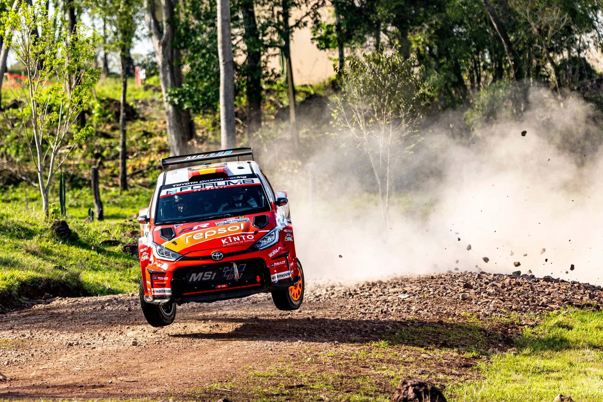
Privateers?
Will we see more privateers other than Teo Martin renting top-class cars for partial campaigns or one-offs?
Photo - WRC Media
The new cars are more affordable to privateers, therefore, we could see an influx of entries, especially in the latter half of the season. In a recent podcast appearance on RallyCast, MSi Racing team boss Teo Martin revealed that the team would be making their debut in the WRC's top class in the summer of 2027 with a GR Celica Rally1. Alejandro Cachón could be one of the drivers entered by the team, which is also aiming to field a second car in the future.
Mārtiņš Sesks' plans for 2027 are unclear, with the Latvian weighing up whether pursuing further outings in the top class would be worthwhile. In any case, top-class outings in the Fiesta Rally1 would be more attainable for 2027 for whoever has the money to rent one out (or upgrade from a Rally2).
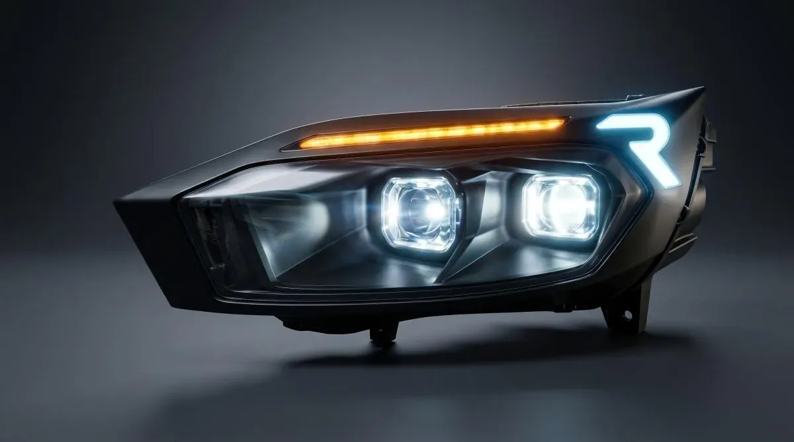
WRT Rally1 Spain
We got to see their headlights!
WRT Rally1 Spain is another tuner expected to make their debut in the 2027 WRC season. So far, the team has made promising statements about their 2027 challenger, recently unveiling an innovative headlight system that took more than 700 hours of engineering work to develop. The team aims to debut in Canarias, but without any images of them testing a test mule or a full car reveal, it remains difficult to estimate when their first competitive outing will be. WRC veteran Dani Sordo is set to test the car and then assess if he would like to compete in select events moving forward, according to Roberto Méndez, team boss of RMC Motorsport, who is tasked with building and running the cars.
Méndez has also said that the team's aim is to run one car for Sordo, a second one for a young driver supported by the Spanish Federation, with a third car available for rent by foreign drivers. The team expects to start testing their car in December, with the full homologation to be complete in March next year.
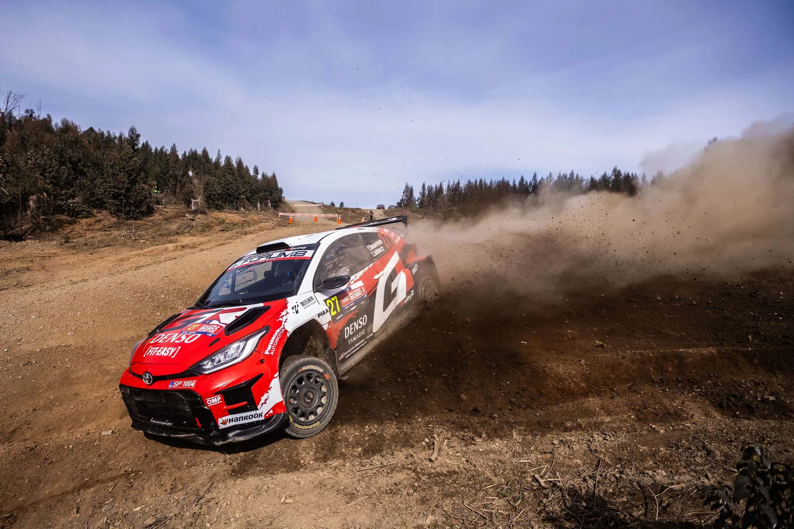
So how many entries can we expect per rally?
Βy the end of the season, we could be seeing the most top-class entries the WRC has seen in years
Photo - WRC Media
Early in the season, the entries could be between 9 and 12, but at the end of the season, it would not be impossible to see close to 16 or 20 top-class entries in some events, especially if Hyundai or Lancia homologate a kit for their Rally2s. There's lots to be excited about in the 2027 WRC season!


Comments